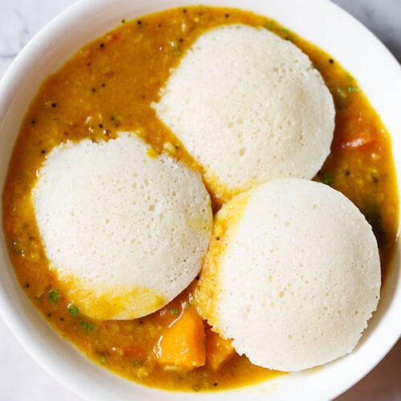

Idli

Idli is one of the most healthiest and popular South Indian breakfast dish. These are soft, light, fluffy steamed round cake made with a ground, fermented rice and lentil batter.
Here I share my foolproof recipe with video and step-by-step photos that will help you in making the best idli. This Idli recipe is one of the earliest recipe from the blog which has been tried and tested with great results by many of our readers.
Ingridients
- ½ cup idli rice or parboiled rice or regular rice – 100 grams
- ½ cup regular rice – 100 grams
- ¼ cup urad dal – 50 grams (husked whole or split black gram)
- ⅛ teaspoon fenugreek seeds or 2 pinches (methi seeds or methi dana)
- 2 tablespoons thick poha (flattened rice)
- 1.5 cups water – for soaking both rice and lentils
- ¾ cup water – for grinding, do add water as required
- ½ teaspoon rock salt edible and food grade or non-iodized salt or sea salt crystals or Himalayan pink salt
- oil as required
Instructions
- In a bowl take the idli rice or parboiled rice along with the regular white rice. Instead of adding regular rice, you can also make the dosa with a total of 1 cup idli rice.
- Drain all the water and add the soaked ingredients in a wet grinder jar.
- Add ⅔ to ¾ cup water and grind till you get a fine grainy consistency of rice in the batter. A smooth consistency of batter is also fine.
- Now lightly stir the batter, before you begin to make idli.
- Now take a ladle full of the batter. Pour the dosa batter and gently spread the batter starting from the center and moving outwards.
- Cook till the base is nicely golden and crisp. The base will leave the pan and the sides will also get separated when it gets cooked.
- Serve these crisp plain dosa with sambar or potato masala or coconut chutney.